Show other secondary papers
Boundary-condition identification from a scale-invariant frequency ratio in shear-deformable and nonlocal beams and plates
Authors: Akın Oktav
Type: theory · Category: other · PDF: https://arxiv.org/pdf/2609.22567v1
Analysis basis: full PDF text, analyzed in chunks
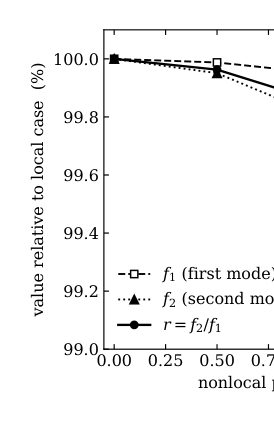
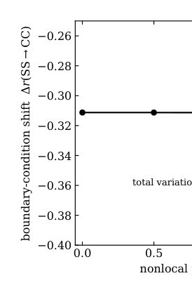
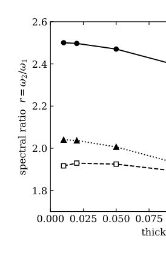
Summary. This paper introduces a novel technique to determine the boundary conditions of micro-scale beams and plates by analyzing the frequency ratio shift ($\Delta r$). This shift is remarkably insensitive to common structural variations like size or material changes, making it a powerful, model-independent diagnostic tool for structural characterization.
Why it may be interesting. While the physics is classical continuum mechanics, the concept of using a highly robust, scale-invariant diagnostic ($\Delta r$) to extract fundamental structural information (boundary conditions) from measurements is analogous to finding robust signatures in complex quantum systems.
Detailed structure
Main problem. The paper aims to identify the boundary conditions of small-scale beams or plates using a frequency ratio that is invariant to size, material density, and absolute stiffness.
Main result. The fractional shift in the frequency ratio ($\Delta r$) is highly robust against variations in thickness, nonlocality, and material anisotropy, allowing for reliable boundary condition identification.
Method. The method calculates the ratio of the first two natural frequencies ($r = \omega_2/\omega_1$) and its shift ($\Delta r$) when boundary conditions are changed, using advanced solvers for shear-deformable and nonlocal beams/plates.
Model / system. The analysis focuses on the free harmonic vibration of linear elastic structures, specifically shear-deformable beams and plates, incorporating both transverse shear deformation (Timoshenko/Mindlin) and small-scale nonlocal elasticity (Eringen's model).
Key observables. The spectral ratio ($r = \omega_2/\omega_1$) and the boundary-condition shift ($\Delta r = [r(B_2) - r(B_1)]/r(B_1)$).
Important parameters / regimes. Small-scale parameter ($\epsilon_0 a$), thickness ratio ($h/L$), and the specific boundary conditions (e.g., simply supported, clamped-clamped).
Assumptions / limitations. The method assumes the structure is in the bending-dominated regime and that the boundary conditions can be characterized by discrete classes or continuous springs.
Figures summary. The notes mention figures showing the spectral ratio vs. thickness ratio for different boundary conditions and tables comparing percentage changes in $r$ and $\Delta r$ under material perturbations.
Paper structure. The paper establishes the ratio and shift, details the nonlocal beam model, presents beam results, develops the shift into an inverse identification method, and finally extends the analysis to plates.
Abstract
The ratio of a structure's first two natural frequencies depends on its boundary conditions but not on its size, material density, or absolute stiffness, which multiply every frequency equally and cancel in the quotient. We use this to identify the boundary conditions of a small-scale beam or plate from two ratio measurements, without knowing its exact dimensions or material. The paper first establishes how the ratio $r=ω_2/ω_1$, and the fractional shift $Δr$ it undergoes when a boundary condition changes, respond to the two effects that matter at small scale: transverse shear deformation, through Timoshenko beam and Mindlin plate theory, and small-scale elasticity, through Eringen's nonlocal Timoshenko model. Using a locking-free Rayleigh-Ritz beam solver and a finite-element Mindlin plate solver, each checked against benchmarks, we find an asymmetry. The absolute ratio moves appreciably with thickness, by 12 to 14 per cent over the shear-deformable range, and with orthotropy, by 6 to 9 per cent, but only weakly with nonlocality; the shift $Δr$, by contrast, varies by less than 0.2 per cent over the full nonlocal range and by a few per cent under thickness change. Because $Δr$ is largely independent of these details, a measured shift identifies which boundary-condition transition a deliberate change of support has produced, with a resolution we quantify and verify against molecular-dynamics data. Two spring continua then extend the method to estimating support compliance, with the non-uniqueness of the tip-support case stated explicitly. The method needs no value of the small-scale parameter or the material constants.
Bulk Superconductivity in Rocksalt LaN$_{1-x}$
Authors: Caeli Benyacko, Lin-Ding Yuan, Josiah A. Turner, Laila Reimanis, Siyuan Ji, Cheng Li, Erick A. Lawrence, Hanna Z. Porter, James M. Rondinelli, Stephen D. Wilson
Type: both · Category: other · PDF: https://arxiv.org/pdf/2609.23213v1
Analysis basis: full PDF text, analyzed in chunks
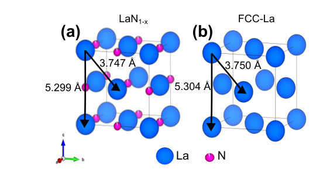
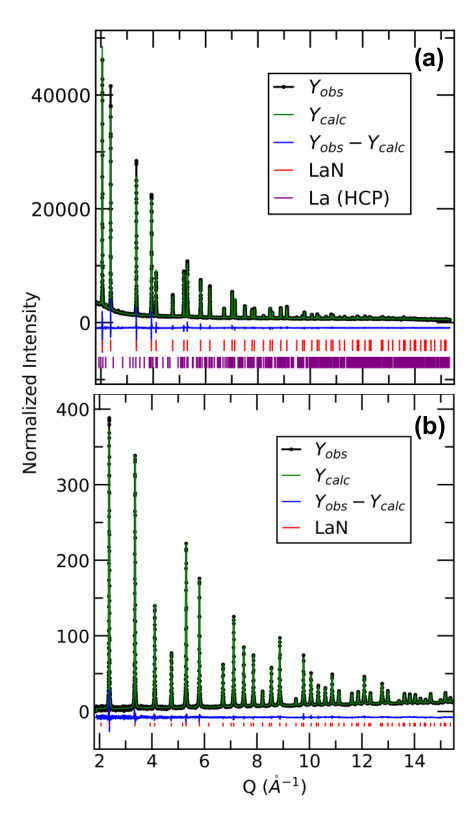
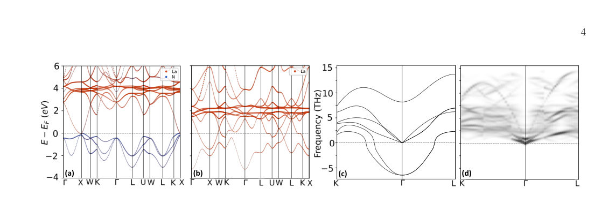
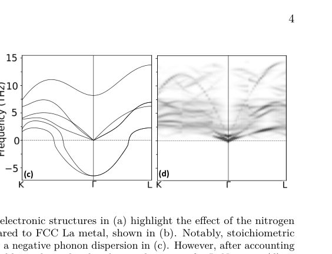
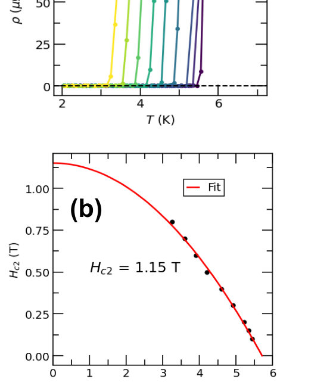
Summary. This work reports the synthesis and characterization of bulk, superconducting lanthanum nitride ($ ext{LaN}_{0.94}$) using high-pressure techniques. The material exhibits superconductivity at $T_c = 5.95 ext{ K}$, establishing $ ext{LaN}$ as the first bulk superconducting member of its family. The findings suggest that the structural stability provided by nitrogen vacancies and the lattice dynamics of the $ ext{La}$ sublattice are key to achieving this superconducting state.
Why it may be interesting. While the focus is on BCS superconductivity, the investigation into lattice dynamics (phonon calculations) and the role of structural instability/vacancies provides insights into electron-phonon coupling mechanisms relevant to strongly correlated systems.
Detailed structure
Main problem. The primary goal was to establish bulk superconductivity in the rare earth mononitride ($ ext{LnN}$) family, specifically investigating the superconducting properties of lanthanum nitride ($ ext{LaN}_{1-x}$).
Main result. The authors successfully synthesized phase-pure, rocksalt $ ext{LaN}_{0.94}$ and confirmed it exhibits bulk superconductivity with a critical temperature ($T_c$) of $5.95 ext{ K}$.
Method. The research combines high-pressure synthesis (HPLFZ) with extensive characterization, including synchrotron X-ray/neutron diffraction, electrical transport, heat capacity, and magnetization measurements, supplemented by DFT calculations.
Model / system. The physical system is lanthanum nitride ($ ext{LaN}_{1-x}$), which adopts a rocksalt structure. The study compares its behavior to other lanthanum monochalcogenides ($ ext{LaO}$, $ ext{LaS}$) to hypothesize that the $ ext{La}$ sublattice lattice mode drives the electron pairing mechanism.
Key observables. Superconducting transition temperature ($T_c = 5.95 ext{ K}$), rocksalt structure verification, stoichiometry ($ ext{LaN}_{0.94}$), and electronic transport ($ ho(T)$).
Important parameters / regimes. Nitrogen vacancy concentration ($\sim 6\%$ in $ ext{LaN}_{0.94}$), high pressure (up to 3000 psi), and the lattice anharmonicity of the $ ext{La}$ sublattice.
Assumptions / limitations. The superconductivity mechanism is hypothesized to be driven by a lattice mode endemic to the $ ext{La}$ FCC scaffold, suggesting a conventional BCS-like pairing mechanism.
Figures summary. Figures show diffraction data confirming the rocksalt $ ext{LaN}_{0.94}$ structure; theoretical figures illustrate band structures and phonon calculations, while others plot transport properties ($ ho(T)$) and heat capacity anomalies ($\Delta C/T$).
Paper structure. The paper follows a structure of problem definition (establishing bulk $ ext{LnN}$ SC), synthesis/characterization (using HPLFZ and diffraction), measurement of SC properties ($ ho(T)$, $C_p(T)$, magnetization), theoretical analysis (DFT/phonon calculations), and finally, a discussion comparing $ ext{LaN}$ to other related compounds.
Abstract
We report the synthesis and characterization of lanthanum nitride by direct reaction of lanthanum metal with high pressure nitrogen gas in a laser floating-zone furnace. Combined synchrotron X-ray and neutron diffraction measurement verifies a rocksalt structure with stoichiometry LaN$_{0.94}$, consistent with first principles prediction that LaN is dynamically unstable in the stoichiometric limit. Electrical transport, heat capacity, and magnetization measurements show that LaN$_{0.94}$ is metallic with a superconducting transition at $T_c=5.95$ K. Our data establish LaN as the first bulk superconducting member of the rare earth mononitride family and motivates future exploration of the series using the unique processing space afforded by high-pressure optical reactors.
Enhanced thermal conductivity of (010) (AlxGa1-x)2O3 epitaxial films utilizing indium-catalyzed molecular beam epitaxy
Authors: Shivashree Gowda, Stephen Schaefer, Ethan A. Scott, Samreen Khan, Patrick E. Hopkins, M. Brooks Tellekamp
Type: both · Category: other · PDF: https://arxiv.org/pdf/2609.24081v1
Analysis basis: full PDF text, analyzed in chunks
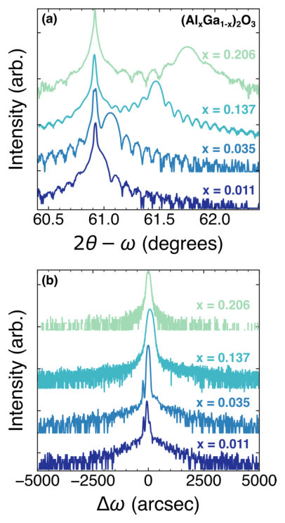

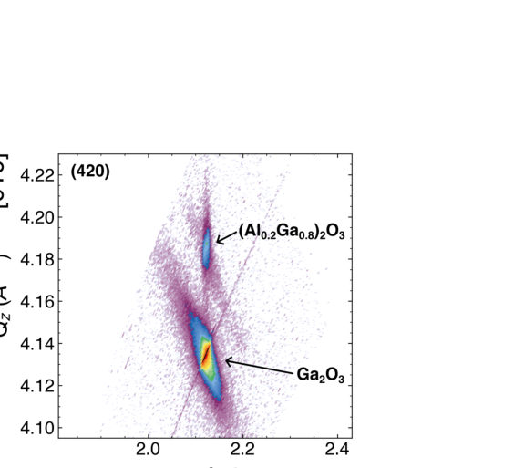
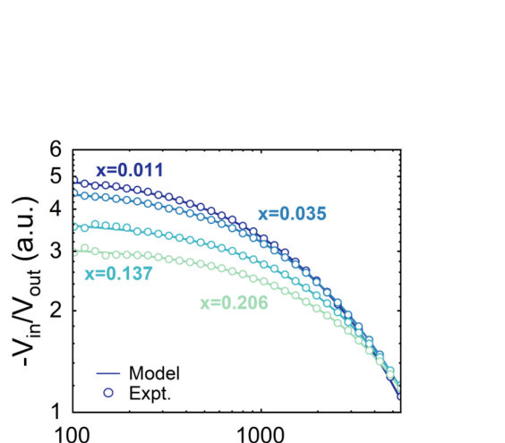
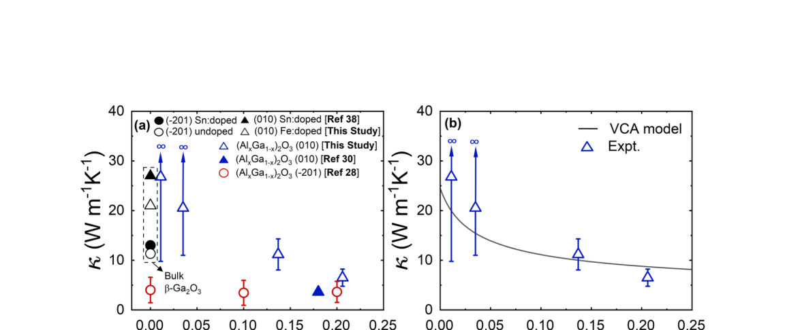
Summary. This work reports on the enhanced thermal conductivity of (AlxGa1-x)2O3 epitaxial films grown via indium-catalyzed MBE. By combining TDTR measurements with VCA and DMM modeling, the authors show that the thermal properties are governed by alloy scattering and interface effects. The results provide critical data for designing high-performance, thermally managed semiconductor heterostructures.
Why it may be interesting. While focused on solid-state thermal transport, the detailed phonon scattering analysis and interface modeling (DMM) provide insights into lattice dynamics and energy transport across dissimilar materials, which has parallels in understanding energy dissipation in quantum devices.
Detailed structure
Main problem. The primary goal is to enhance the thermal conductivity of (010) oriented (AlxGa1-x)2O3 epitaxial films for use in high-power electronics, as the material suffers from low thermal conductivity due to phonon scattering.
Main result. The study demonstrated that indium-catalyzed MBE growth significantly improved thermal conductivity by 2X compared to previous reports, and showed that the thermal conductivity is primarily limited by intrinsic alloy scattering.
Method. The research combines experimental measurements using Time-Domain Thermoreflectance (TDTR) with theoretical modeling using the Virtual Crystal Approximation (VCA) and the Diffuse Mismatch Model (DMM).
Model / system. The physical system is the (AlxGa1-x)2O3/beta-Ga2O3 heterostructure grown epitaxially. The analysis models phonon scattering mechanisms, including alloy scattering and thermal boundary conductance across interfaces.
Key observables. Thermal conductivity (kappa) as a function of Al composition (x), and thermal boundary conductance (G) across the Al/(AlxGa1-x)2O3 interface.
Important parameters / regimes. Al composition (x) ranging from 0.01 to 0.20, and the growth technique (In-catalyzed MBE).
Assumptions / limitations. The DMM analysis for interface conductance assumes the Debye approximation for the three lowest acoustic modes, neglecting optical phonon modes.
Figures summary. Figures show XRD scans confirming high crystalline quality and pseudomorphic growth, and plots comparing measured thermal conductivity vs. Al content against VCA model predictions, alongside plots showing the decline of interface conductance (G) with increasing Al content.
Paper structure. The paper proceeds by first establishing the high crystalline quality of the films via XRD, then measuring the cross-plane thermal conductivity using TDTR, analyzing the composition dependence via VCA, and finally modeling the interface thermal boundary conductance using DMM.
Abstract
(AlxGa1-x)2O3/beta-Ga2O3 transistors are an emerging candidate for high-power and high-frequency electronic devices. beta-Ga2O3 in particular is notably limited for anisotropic low thermal conductivity, which is further reduced in (AlxGa1-x)2O3 due to alloy and other defect-driven phonon scattering mechanisms. In this work we show that the thermal conductivity of (010) oriented (AlxGa1-x)2O3 thin films for 0.01 < x < 0.20, measured using time-domain thermoreflectance (TDTR), is limited by alloy scattering without observable adverse scattering by additional defects. This is enabled through the synthesis of the (AlxGa1-x)2O3 films using molecular beam epitaxy (MBE) on \b{eta}-Ga2O3 substrates, leveraging indium-catalyzed growth to suppress dislocation formation and phase separation to achieve single-phase pseudomorphic films up to x = 0.2. This growth process improved the thermal conductivity of (AlxGa1-x)2O3 by 2X as compared to previously reported values. For increasing Al composition (x), we observe a steady decline in (AlxGa1-x)2O3 thermal conductivity due to alloy scattering which is validated using virtual crystal approximation (VCA) model. We also show that the thermal boundary conductance across the Al/(AlxGa1-x)2O3 interface is reduced with increasing x, which we posit is due to the stiffening of the (AlxGa1-x)2O3 acoustic modes with increasing x by comparing experimental results with a diffuse mismatch model (DMM). Overall, these thermal characteristics provide valuable insights for designing heterostructures with optimized interfaces and composition.
Interface engineering of spin triplet Cooper pairs for spin-valve implementation
Authors: Debashree Nayak, Abhisek Sahoo, Pratap Kumar Sahoo, Kartik Senapati
Type: experiment · Category: other · PDF: https://arxiv.org/pdf/2609.24803v1
Analysis basis: full PDF text, analyzed in chunks
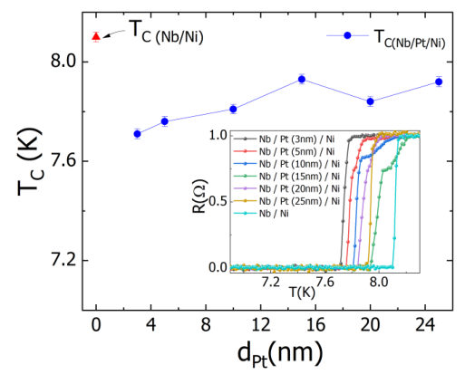
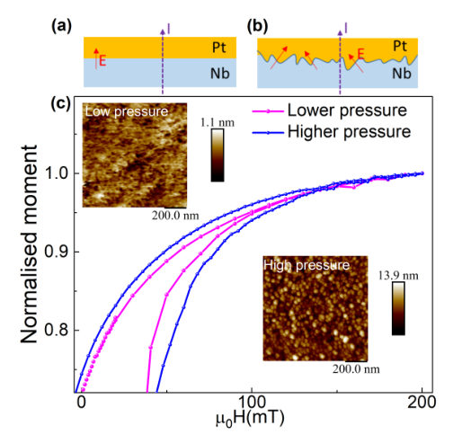
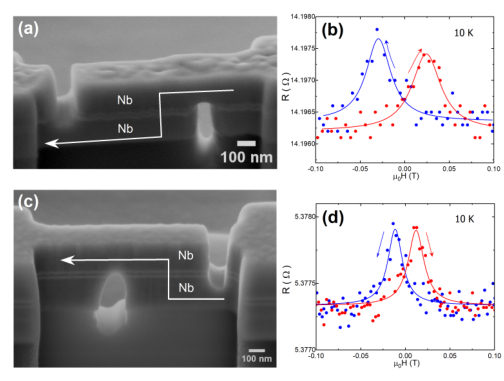
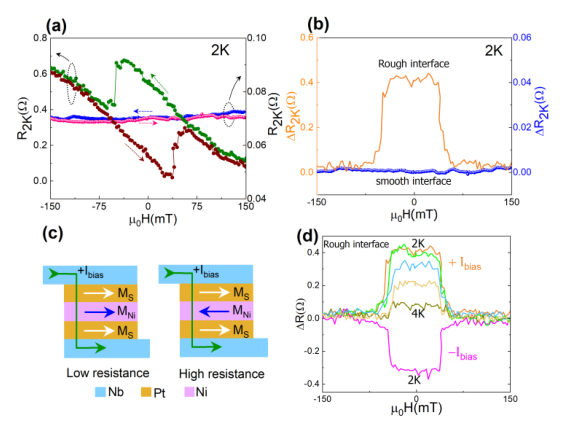
Summary. This research demonstrates a method to build a superconducting spintronic spin-valve using $ ext{Nb/Pt/Ni/Pt/Nb}$ nano-devices. The key breakthrough is showing that deliberately introducing interfacial roughness is necessary to generate the required Rashba spin-orbit coupling, enabling the conversion of Cooper pairs into spin-triplet pairs. This triplet moment then interacts with a magnetic layer to produce a switchable resistance state.
Why it may be interesting. The work directly bridges superconducting physics (Cooper pairs) with spintronics (magnetic switching) using quantum phenomena (triplet pairing), which is highly relevant for understanding superconducting quantum devices and energy-efficient quantum electronics.
Detailed structure
Main problem. The paper aims to demonstrate a novel superconducting spintronic device that utilizes spin-polarized triplet Cooper pairs to achieve a controllable magnetic spin-valve response.
Main result. The spin-valve effect was successfully observed only in devices with engineered interfacial roughness, which was shown to be crucial for generating the necessary Rashba spin-orbit coupling and triplet correlations.
Method. The study involves fabricating and characterizing vertical nano-devices ($ ext{Nb/Pt/Ni/Pt/Nb}$) using techniques like magnetron sputtering and focused ion beam milling, followed by electrical and magnetic transport measurements.
Model / system. The physical system is a multilayer superconducting junction ($ ext{Nb/Pt/Ni/Pt/Nb}$). The mechanism relies on the conversion of spin singlet Cooper pairs to equal-spin triplet pairs at the $ ext{Nb/Pt}$ interface, generating a non-equilibrium spin moment in the $ ext{Pt}$ layer.
Key observables. Spin-valve resistance switching ($\Delta R(H)$), superconducting transition temperature ($ ext{T}_c$) suppression, and the magnitude of the resistance difference between parallel and anti-parallel magnetic states.
Important parameters / regimes. Interfacial roughness (controlled by $ ext{Ar}$ sputtering pressure), external magnetic field ($H$), and bias current.
Assumptions / limitations. The spin-valve operation is attributed to the triplet spin moment interacting with the ferromagnetic moment, and the effect is ruled out as a simple normal spin-Hall effect due to temperature dependence.
Figures summary. Figures compare smooth vs. rough interfaces, showing that only rough interfaces exhibit a pronounced, field-switchable resistance difference ($\Delta R(H)$) at low temperatures, while smooth interfaces show negligible response.
Paper structure. The paper establishes the theoretical basis for triplet pair utilization, details the experimental engineering of interface roughness, presents comparative measurements (MR curves, $ ext{R}(T)$) between rough and smooth samples, and concludes by demonstrating the controllable spin-valve functionality.
Abstract
Spin singlet Cooper pairs can be converted into equal-spin triplet pairs at a superconductor/heavy-metal interface under suitable conditions. Under current carrying conditions, these triplet correlations can give rise to a non equilibrium spin moment in the heavy metal through the predicted supercurrent spin-Hall effect. Here we demonstrate that this current induced triplet spin moment, in conjunction with the magnetic moment of a ferromagnetic layer, can enable a magnetic spin-valve response in Nb/Pt/Ni/Pt/Nb vertical nano-devices. The magnitude of this spin-valve effect depends on the efficiency of singlet-triplet Cooper pair conversion at the Nb/Pt interface. In order to facilitate efficient triplet generation, we deliberately introduced interfacial roughness to introduce finite Rashba spin-orbit coupling at the Nb/Pt interface and an out-of-plane component of magnetic moment at the Ni interface. In contrast, no discernible spin-valve response was observed in devices with smooth interfaces within measurement resolutions. Since the magnetic moment of the Ni layer and the current-induced triplet spin moment in the Pt layer are independently switchable using a magnetic field and bias current, respectively, the spin valve can be controlled via either parameters. These results demonstrates a novel approach to directly utilizing the spin polarized triplet Copper pairs in superconducting spintronic applications.
THz Spectroscopy of Urine Vapors from Patients with Prostate Cancer and Benign Prostatic Hyperplasia: A Pilot Analysis
Authors: V. A. Atduev, A. V. Maslennikova, V. L. Vaks, E. G. Domracheva, M. B. Chernyaeva, V. A. Anfertev, K. A. Atduev, Y. Tawalbeh, M. F. Pereira
Type: experiment · Category: other · PDF: https://arxiv.org/pdf/2609.23814v1
Analysis basis: full PDF text, analyzed in chunks
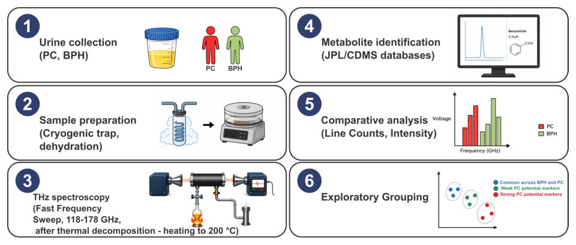
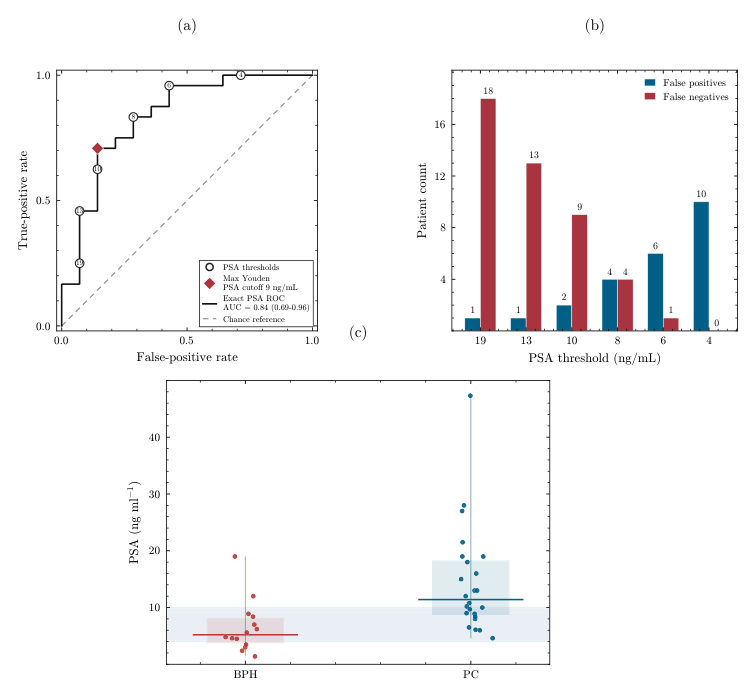
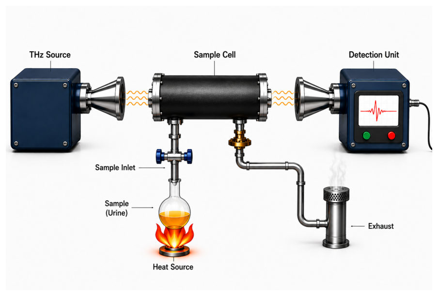
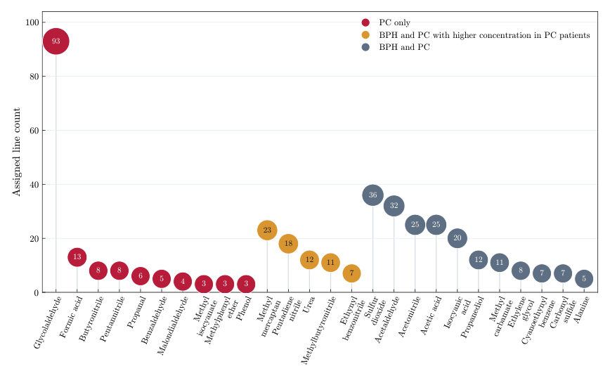
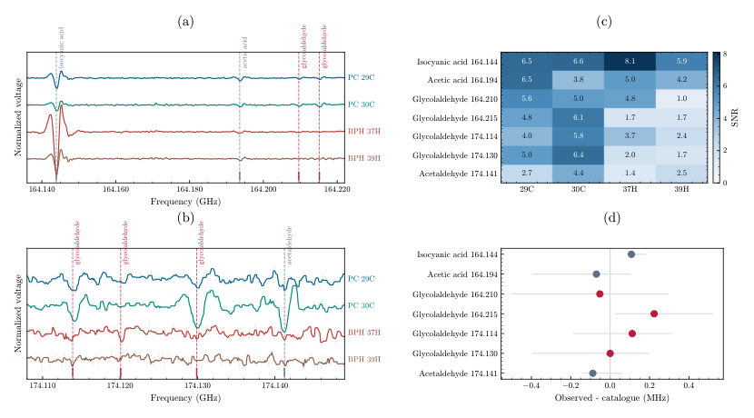
Summary. This pilot study utilized high-resolution terahertz spectroscopy to analyze volatile metabolites in urine vapors from patients with prostate cancer (PC) and benign prostatic hyperplasia (BPH). The research found distinct molecular spectral patterns between the two groups, suggesting that urine metabolomics could provide valuable, non-invasive complementary diagnostic information to existing markers like PSA.
Why it may be interesting. not directly relevant
Detailed structure
Main problem. The study aims to find non-invasive, complementary molecular information to aid in the diagnosis of prostate cancer (PC), as standard serum markers like PSA are not cancer-specific.
Main result. THz spectroscopy analysis identified differences in molecular-assignment patterns between PC and BPH urine samples, supporting its potential as a complementary diagnostic tool alongside PSA.
Method. High-resolution terahertz (THz) spectroscopy was used to examine volatile and thermal-decomposition products from urine samples collected from patients with PC and BPH.
Model / system. The physical system is urine vapor, analyzed after vacuum drying and potentially subjected to thermal decomposition. The measurement platform is a fast-sweep THz spectrometer operating in the 118–175 GHz range.
Key observables. Molecular-assignment patterns, candidate spectral features, and relative concentrations of specific volatile and thermal decomposition products (e.g., Methylbutyronitrile, Urea).
Important parameters / regimes. The comparison is between 24 PC patients and 14 BPH patients; the analysis compares spectral signatures to distinguish between the two conditions.
Assumptions / limitations. The study is an exploratory pilot assessment and did not evaluate diagnostic accuracy or superiority to PSA, requiring further technical standardization and clinical validation.
Figures summary. Figure 1 outlines the workflow from urine collection to THz fingerprinting. Figure 2 shows the ROC curve for PSA separation. Tables compare the presence and relative abundance of specific metabolites found in PC versus BPH samples.
Paper structure. The paper establishes the clinical need for better PC diagnosis, details the THz spectroscopy methodology applied to urine vapors, presents comparative spectral data for metabolites, and concludes by advocating for further clinical validation of the technique.
Abstract
Approximately 13% of men will be diagnosed with prostate cancer (PC) during their lifetime. Serum prostate-specific antigen (PSA) is widely used for screening and risk assessment; however, PSA elevations are not cancer-specific and may also occur in benign conditions such as prostatitis and benign prostatic hyperplasia (BPH). Additional non-invasive approaches capable of provid- ing complementary molecular information are therefore needed. Here, we present an exploratory pilot study using high-resolution terahertz (THz) spectroscopy to examine urine-derived volatile and thermal-decomposition products. Analysis of urine samples from 24 patients with PC and 14 patients with BPH identified differences in the reported molecular-assignment patterns and candi- date spectral features for further evaluation. The study was designed for candidate identification and feasibility assessment and did not evaluate diagnostic accuracy or superiority to PSA. These findings support further investigation of THz spectroscopy as a potential source of complementary molecular information alongside PSA and other established clinical assessments. The study also outlines the technical standardization and clinical-validation requirements that must be addressed before this approach can be considered for routine clinical use.
Transitions between bulk and interfacial fracture in diamond/$c$BN heterostructures
Authors: Wei Qiu, Feiyu Zhou, Xiaonan Wang, Feng Xie, Yan Chen, Shengying Yue, Yilun Liu, Penghua Ying
Type: theory · Category: other · PDF: https://arxiv.org/pdf/2609.23963v1
Analysis basis: full PDF text, analyzed in chunks
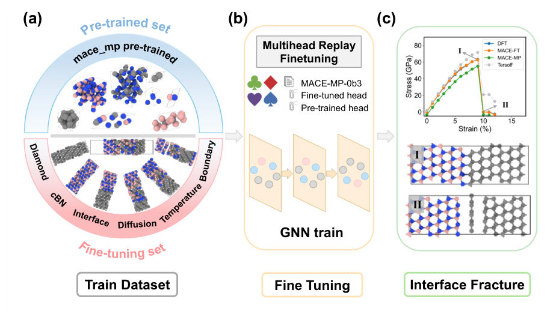
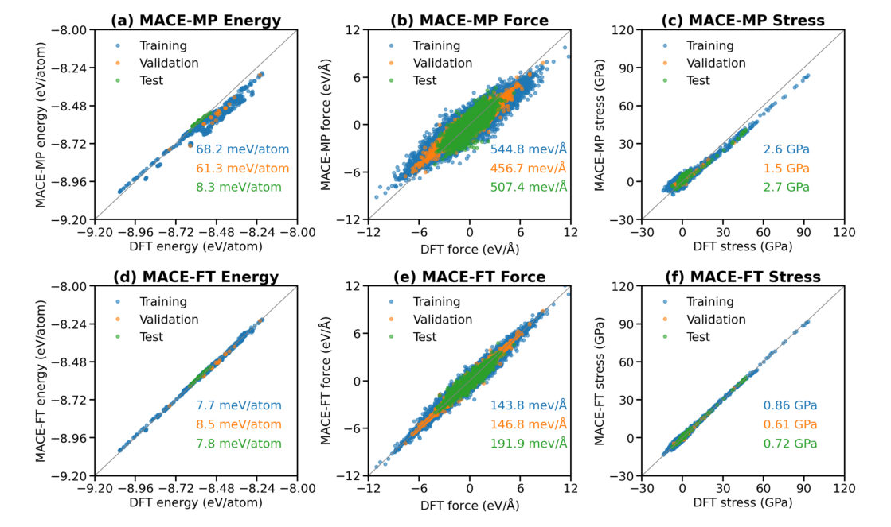
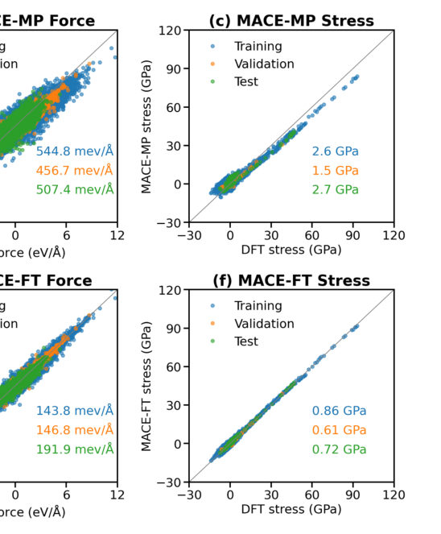
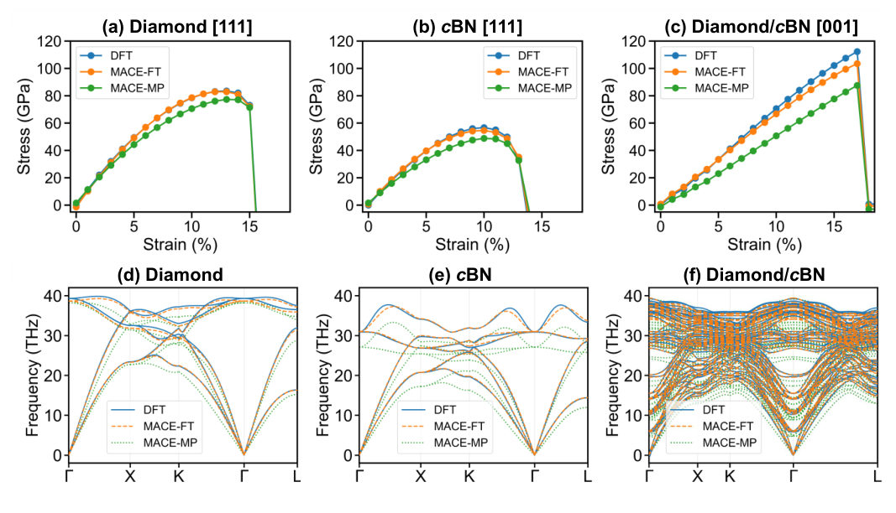
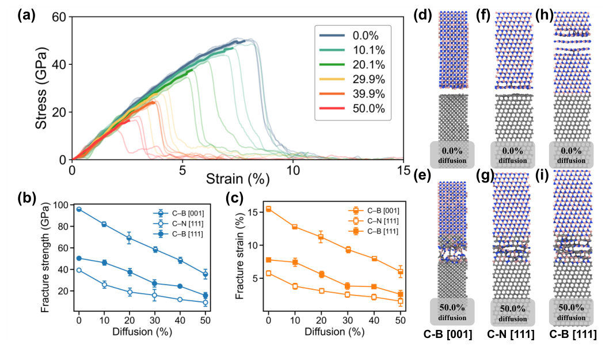
Summary. This work uses advanced machine learning potentials combined with DFT to simulate tensile fracture in diamond/cBN heterostructures. It reveals that the failure mechanism shifts from bulk fracture to interfacial fracture as diffusion increases, establishing an atomistic framework for controlling fracture resistance by manipulating interfacial chemistry and orientation.
Why it may be interesting. While focused on solid-state mechanics, the use of advanced ML potentials trained on DFT data to simulate complex, non-equilibrium failure processes is highly relevant to developing accurate, scalable simulation tools for quantum materials.
Detailed structure
Main problem. The study aims to determine whether tensile fracture in diamond/cBN heterostructures occurs at the interface or within the adjoining crystal phase, and how interfacial chemistry, orientation, and intermixing influence this competition.
Main result. The fracture pathway is highly dependent on the diffusion fraction, transitioning through distinct regimes from bulk-to-interface failure, which is governed by stress relocation and the relative cohesion of competing atomic planes.
Method. The authors combined Density Functional Theory (DFT) with a fine-tuned machine-learned interatomic potential (MLP) to perform large-scale, atomistic tensile-fracture molecular dynamics simulations.
Model / system. The system under investigation is coherent diamond/cubic boron nitride (cBN) heterostructures, with simulations focusing on (111) and (001) oriented interfaces subjected to controlled levels of diffusion-induced intermixing.
Key observables. Fracture strength (e.g., 50.3 GPa $ ightarrow$ 15.8 GPa), fracture-plane selection (interface vs. bulk), stress fields, and DFT separation energetics.
Important parameters / regimes. Diffusion fraction (0% to 50.0%), interfacial termination (C-N vs. C-B bonding), and crystallographic orientation ((111) vs. (001)).
Assumptions / limitations. The MLP potential accurately reproduces independent DFT tensile responses, and intermixing is modeled by random exchange of atoms within a defined layer region.
Figures summary. Figures illustrate the workflow for fine-tuning the MLP potential, comparing stress-strain responses against DFT benchmarks, and showing the evolution of fracture mechanisms across different diffusion regimes.
Paper structure. The paper establishes the scientific problem, details the advanced computational methodology (MLP training/validation), presents systematic tensile-fracture simulations across varying intermixing levels, and concludes by providing a mechanistic interpretation of the observed fracture transitions.
Abstract
Whether an initially crack-free heterostructure fails at its interface or within an adjoining phase is controlled by the relative cohesion of competing atomic planes, but how interfacial chemistry, crystallographic orientation, and intermixing reshape this competition remains unclear. Here, we combine density functional theory (DFT) with a fine-tuned atomistic foundation model to resolve tensile fracture in coherent diamond/cubic boron nitride (cBN) heterostructures. The resulting potential reproduces independent DFT tensile responses, including an unseen (001) interface orientation. Interfacial termination, orientation, and diffusion-induced intermixing jointly determine fracture resistance and fracture-plane selection. C-N-bonded (111) and C-B-bonded (001) remain interface-controlled throughout the investigated intermixing range, whereas pristine C-B-bonded (111) fractures at a neighboring B-N plane inside cBN because the interface is more strongly bound. Increasing the diffusion fraction from 0 to 50.0% causes a nonlinear decrease in fracture strength from 50.3 to 15.8 GPa and drives a bulk-to-interface transition through three regimes: cBN fracture up to 4.86%, configuration-dependent competition between 7.6 and 10.1%, and interfacial fracture at 12.5% and above. Atom-resolved stress fields and DFT separation energetics show that this transition is associated with stress relocation and a reversal in the relative cohesion of competing planes, while electron localization analysis connects the cohesion hierarchy to termination- and orientation-dependent bonding. These results establish an atomistic framework for controlling fracture resistance and fracture pathways in strongly bonded heterostructures.